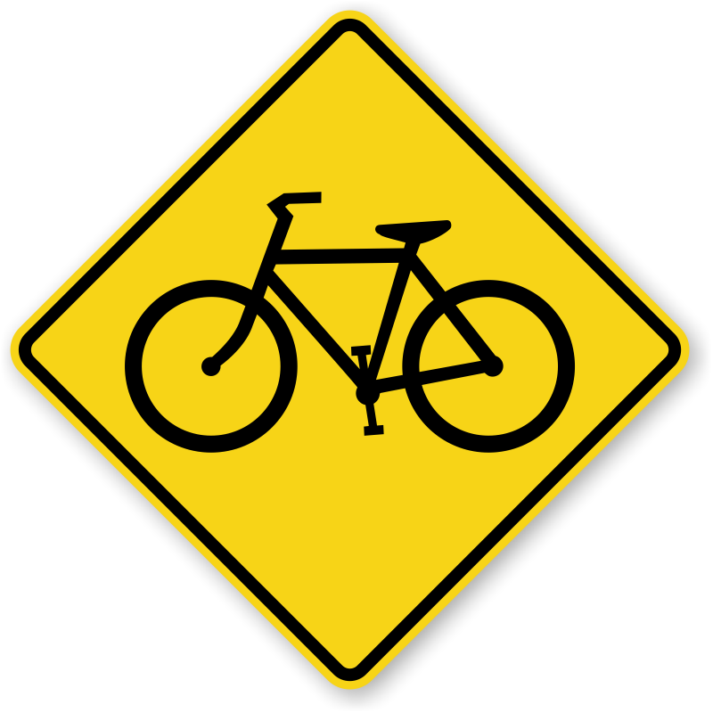
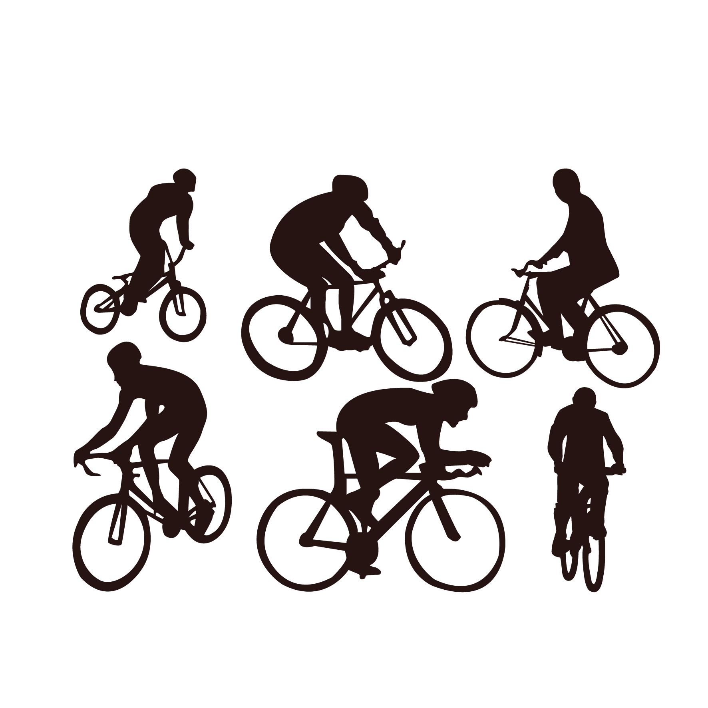

Características Principales
-

Mapeo de Ciclovías
Visualiza y planifica rutas ciclistas de manera conveniente.
-

Alertas de Seguridad
Mantente informado sobre zonas peligrosas y condiciones climáticas.
-

Comunidad Ciclista
Únete a una comunidad activa de ciclistas y comparte tus rutas y experiencias.